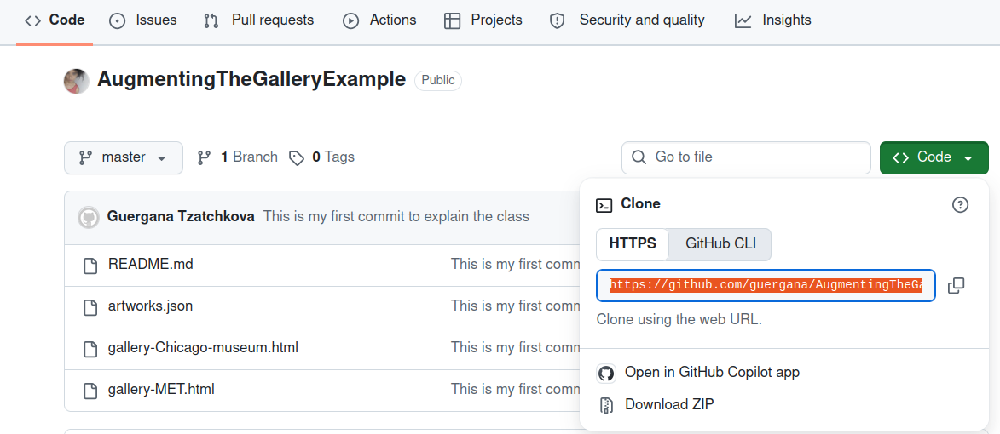

Save your work, send it to GitHub, and keep your copy up to date
git --versionIf you see a version number (like
git version 2.45.0), you're done.git-scm.com and keep the default options.xcode-select --install in the terminal and follow the prompts.git config --global user.name "Your Name"
git config --global user.email "you@example.com"
git config --list
--global means these settings apply to every project on your computer. You only need to do this once.mkdir my-project cd my-project
git initMake sure you have a folder only for the project. Everything that is in the folder will be tracked for changes.
git remote add origin https://github.com/YOUR-USERNAME/my-project.git"origin" is the usual nickname for your GitHub copy.
main:
git branch -M mainBy default depending on the git version the first branch can be named main or master. You can check the name with
git branch
git remote -v. You should see your GitHub URL listed.git add .(
. means "everything that changed". You can also name one file, like git add index.html.)git commit -m "Describe what you changed"
First push only (sets the link between your local branch and GitHub):
git push --set-upstream origin main
The short form git push -u origin main does the same thing.
Every push after that:
git push
git add. If there is no + then it is right click and Stage filesgit pullIn VS Code, the Sync Changes button also pulls before it pushes.
| Command | What it does |
|---|---|
git status | Shows which files changed and what's staged |
git pull | Downloads the latest changes in the repo from GitHub to your computer |
git log --oneline | Shows the list of saved snapshots (commits) |
git clone URL | Downloads a whole project from GitHub the first time. Example: git clone https://github.com/guergana/AugmentingTheGalleryExample.git The green Code button is where you find the address for the clone command:  |